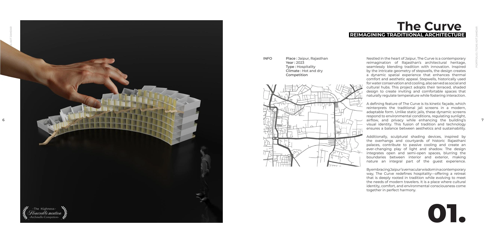
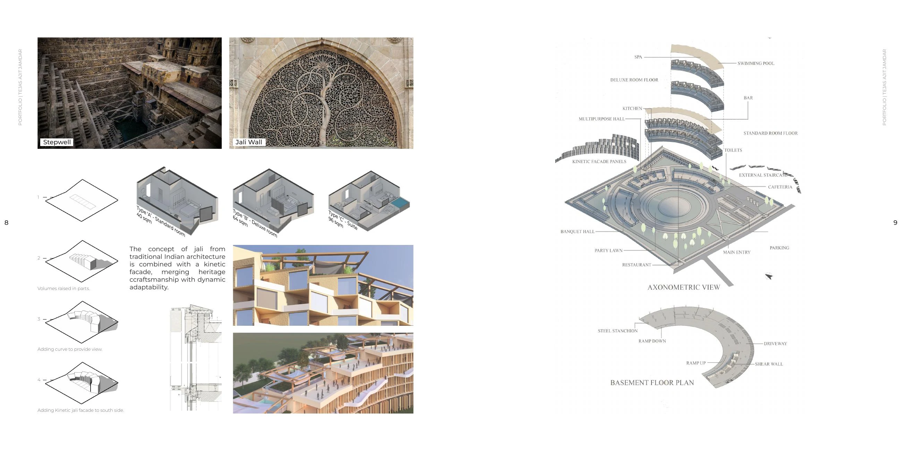
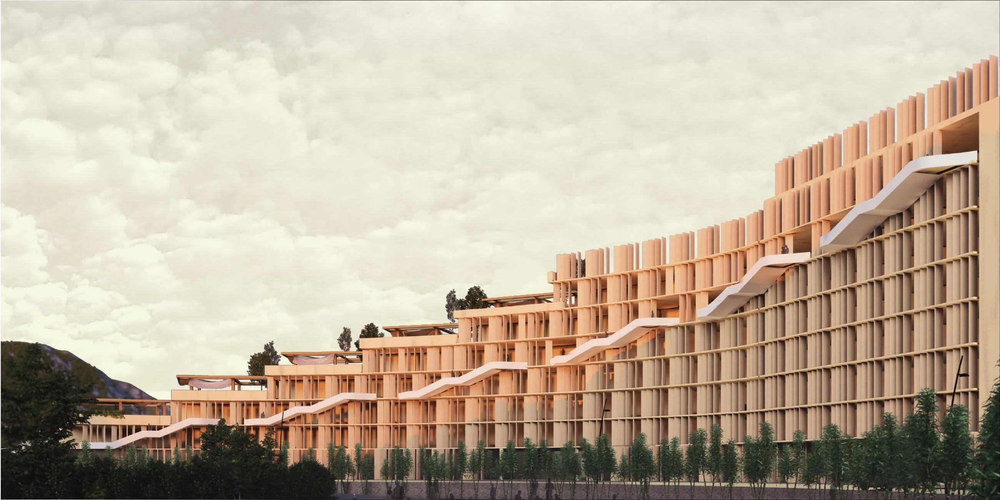

Hotel Design Competition · Tejas Ajit Jamdar
The Curve
REIMAGINING TRADITIONAL ARCHITECTURE
The Curve is a hotel design competition project by Tejas Ajit Jamdar, Viraj Deshmukh and Mayur Pande. Its guiding theme, “Reimagining traditional architecture,” frames the proposal’s approach to architectural expression.
The project received an Honourable Mention from Archmello. Explore the original presentation sheets below and the corresponding three-dimensional model in the interactive portfolio. The work is presented as a competition design proposal.
Recognition
HONOURABLE MENTION – ARCHMELLO
Project credits
Tejas Ajit Jamdar, VIRAJ DESHMUKH, MAYUR PANDE
Explore the interactive 3D portfolio →Project presentation


